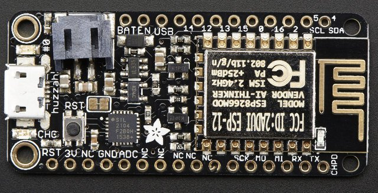

Quick reference for the ESP8266¶
{kind=link}
The Adafruit Feather HUZZAH board (image attribution: Adafruit).
Below is a quick reference for ESP8266-based boards. If it is your first time working with this board please consider reading the following sections first:
Installing MicroPython¶
See the corresponding section of tutorial: Getting started with MicroPython on the ESP8266. It also includes a troubleshooting subsection.
General board control¶
The MicroPython REPL is on UART0 (GPIO1=TX, GPIO3=RX) at baudrate 115200. Tab-completion is useful to find out what methods an object has. Paste mode (ctrl-E) is useful to paste a large slab of Python code into the REPL.
The machine module:
import machine
machine.freq() # get the current frequency of the CPU
machine.freq(160000000) # set the CPU frequency to 160 MHz
The esp module:
import esp
esp.osdebug(None) # turn off vendor O/S debugging messages
esp.osdebug(0) # redirect vendor O/S debugging messages to UART(0)
Networking¶
The network module:
import network
wlan = network.WLAN(network.STA_IF) # create station interface
wlan.active(True) # activate the interface
wlan.scan() # scan for access points
wlan.isconnected() # check if the station is connected to an AP
wlan.connect('ssid', 'key') # connect to an AP
wlan.config('mac') # get the interface's MAC address
wlan.ifconfig() # get the interface's IP/netmask/gw/DNS addresses
ap = network.WLAN(network.AP_IF) # create access-point interface
ap.active(True) # activate the interface
ap.config(ssid='ESP-AP') # set the SSID of the access point
A useful function for connecting to your local WiFi network is:
def do_connect():
import network
wlan = network.WLAN(network.STA_IF)
wlan.active(True)
if not wlan.isconnected():
print('connecting to network...')
wlan.connect('ssid', 'key')
while not wlan.isconnected():
pass
print('network config:', wlan.ifconfig())
Once the network is established the socket module can be used
to create and use TCP/UDP sockets as usual.
Delay and timing¶
Use the time module:
import time
time.sleep(1) # sleep for 1 second
time.sleep_ms(500) # sleep for 500 milliseconds
time.sleep_us(10) # sleep for 10 microseconds
start = time.ticks_ms() # get millisecond counter
delta = time.ticks_diff(time.ticks_ms(), start) # compute time difference
Timers¶
Virtual (RTOS-based) timers are supported. Use the machine.Timer class with timer ID of -1:
from machine import Timer
tim = Timer(-1)
tim.init(period=5000, mode=Timer.ONE_SHOT, callback=lambda t:print(1))
tim.init(period=2000, mode=Timer.PERIODIC, callback=lambda t:print(2))
The period is in milliseconds.
Pins and GPIO¶
Use the machine.Pin class:
from machine import Pin
p0 = Pin(0, Pin.OUT) # create output pin on GPIO0
p0.on() # set pin to "on" (high) level
p0.off() # set pin to "off" (low) level
p0.value(1) # set pin to on/high
p2 = Pin(2, Pin.IN) # create input pin on GPIO2
print(p2.value()) # get value, 0 or 1
p4 = Pin(4, Pin.IN, Pin.PULL_UP) # enable internal pull-up resistor
p5 = Pin(5, Pin.OUT, value=1) # set pin high on creation
Available pins are: 0, 1, 2, 3, 4, 5, 12, 13, 14, 15, 16, which correspond to the actual GPIO pin numbers of ESP8266 chip. Note that many end-user boards use their own adhoc pin numbering (marked e.g. D0, D1, …). As MicroPython supports different boards and modules, physical pin numbering was chosen as the lowest common denominator. For mapping between board logical pins and physical chip pins, consult your board documentation.
Note that Pin(1) and Pin(3) are REPL UART TX and RX respectively.
Also note that Pin(16) is a special pin (used for wakeup from deepsleep
mode) and may be not available for use with higher-level classes like
Neopixel.
There’s a higher-level abstraction machine.Signal
which can be used to invert a pin. Useful for illuminating active-low LEDs
using on() or value(1).
UART (serial bus)¶
See machine.UART.
from machine import UART
uart = UART(0, baudrate=9600)
uart.write('hello')
uart.read(5) # read up to 5 bytes
Two UARTs are available. UART0 is on Pins 1 (TX) and 3 (RX). UART0 is bidirectional, and by default is used for the REPL. UART1 is on Pins 2 (TX) and 8 (RX) however Pin 8 is used to connect the flash chip, so UART1 is TX only.
When UART0 is attached to the REPL, all incoming chars on UART(0) go straight to stdin so uart.read() will always return None. Use sys.stdin.read() if it’s needed to read characters from the UART(0) while it’s also used for the REPL (or detach, read, then reattach). When detached the UART(0) can be used for other purposes.
If there are no objects in any of the dupterm slots when the REPL is started (on hard or soft reset) then UART(0) is automatically attached. Without this, the only way to recover a board without a REPL would be to completely erase and reflash (which would install the default boot.py which attaches the REPL).
To detach the REPL from UART0, use:
import os
os.dupterm(None, 1)
The REPL is attached by default. If you have detached it, to reattach it use:
import os, machine
uart = machine.UART(0, 115200)
os.dupterm(uart, 1)
PWM (pulse width modulation)¶
PWM can be enabled on all pins except Pin(16). There is a single frequency for all channels, with range between 1 and 1000 (measured in Hz). The duty cycle is between 0 and 1023 inclusive.
Use the machine.PWM class:
from machine import Pin, PWM
pwm0 = PWM(Pin(0)) # create PWM object from a pin
pwm0.freq() # get current frequency
pwm0.freq(1000) # set frequency
pwm0.duty() # get current duty cycle
pwm0.duty(200) # set duty cycle
pwm0.deinit() # turn off PWM on the pin
pwm2 = PWM(Pin(2), freq=500, duty=512) # create and configure in one go
ADC (analog to digital conversion)¶
ADC is available on a dedicated pin. Note that input voltages on the ADC pin must be between 0v and 1.0v.
Use the machine.ADC class:
from machine import ADC
adc = ADC(0) # create ADC object on ADC pin
adc.read() # read value, 0-1024
Software SPI bus¶
There are two SPI drivers. One is implemented in software (bit-banging) and works on all pins, and is accessed via the machine.SoftSPI class:
from machine import Pin, SoftSPI
# construct an SPI bus on the given pins
# polarity is the idle state of SCK
# phase=0 means sample on the first edge of SCK, phase=1 means the second
spi = SoftSPI(baudrate=100000, polarity=1, phase=0, sck=Pin(0), mosi=Pin(2), miso=Pin(4))
spi.init(baudrate=200000) # set the baudrate
spi.read(10) # read 10 bytes on MISO
spi.read(10, 0xff) # read 10 bytes while outputting 0xff on MOSI
buf = bytearray(50) # create a buffer
spi.readinto(buf) # read into the given buffer (reads 50 bytes in this case)
spi.readinto(buf, 0xff) # read into the given buffer and output 0xff on MOSI
spi.write(b'12345') # write 5 bytes on MOSI
buf = bytearray(4) # create a buffer
spi.write_readinto(b'1234', buf) # write to MOSI and read from MISO into the buffer
spi.write_readinto(buf, buf) # write buf to MOSI and read MISO back into buf
Hardware SPI bus¶
The hardware SPI is faster (up to 80Mhz), but only works on following pins:
MISO is GPIO12, MOSI is GPIO13, and SCK is GPIO14. It has the same
methods as the bitbanging SPI class above, except for the pin parameters for the
constructor and init (as those are fixed):
from machine import Pin, SPI
hspi = SPI(1, baudrate=80000000, polarity=0, phase=0)
(SPI(0) is used for FlashROM and not available to users.)
I2C bus¶
The I2C driver is implemented in software and works on all pins, and is accessed via the machine.I2C class (which is an alias of machine.SoftI2C):
from machine import Pin, I2C
# construct an I2C bus
i2c = I2C(scl=Pin(5), sda=Pin(4), freq=100000)
i2c.readfrom(0x3a, 4) # read 4 bytes from peripheral device with address 0x3a
i2c.writeto(0x3a, '12') # write '12' to peripheral device with address 0x3a
buf = bytearray(10) # create a buffer with 10 bytes
i2c.writeto(0x3a, buf) # write the given buffer to the peripheral
Real time clock (RTC)¶
See machine.RTC
from machine import RTC
rtc = RTC()
rtc.datetime((2017, 8, 23, 1, 12, 48, 0, 0)) # set a specific date and time
rtc.datetime() # get date and time
# synchronize with ntp
# need to be connected to wifi
import ntptime
ntptime.settime() # set the rtc datetime from the remote server
rtc.datetime() # get the date and time in UTC
Note
Not all methods are implemented: RTC.now(), RTC.irq(handler=*)
(using a custom handler), RTC.init() and RTC.deinit() are
currently not supported.
WDT (Watchdog timer)¶
See machine.WDT.
from machine import WDT
# enable the WDT
wdt = WDT()
wdt.feed()
Deep-sleep mode¶
Connect GPIO16 to the reset pin (RST on HUZZAH). Then the following code can be used to sleep, wake and check the reset cause:
import machine
# configure RTC.ALARM0 to be able to wake the device
rtc = machine.RTC()
rtc.irq(trigger=rtc.ALARM0, wake=machine.DEEPSLEEP)
# check if the device woke from a deep sleep
if machine.reset_cause() == machine.DEEPSLEEP_RESET:
print('woke from a deep sleep')
# set RTC.ALARM0 to fire after 10 seconds (waking the device)
rtc.alarm(rtc.ALARM0, 10000)
# put the device to sleep
machine.deepsleep()
OneWire driver¶
The OneWire driver is implemented in software and works on all pins:
from machine import Pin
import onewire
ow = onewire.OneWire(Pin(12)) # create a OneWire bus on GPIO12
ow.scan() # return a list of devices on the bus
ow.reset() # reset the bus
ow.readbyte() # read a byte
ow.writebyte(0x12) # write a byte on the bus
ow.write('123') # write bytes on the bus
ow.select_rom(b'12345678') # select a specific device by its ROM code
There is a specific driver for DS18S20 and DS18B20 devices:
import time, ds18x20
ds = ds18x20.DS18X20(ow)
roms = ds.scan()
ds.convert_temp()
time.sleep_ms(750)
for rom in roms:
print(ds.read_temp(rom))
Be sure to put a 4.7k pull-up resistor on the data line. Note that
the convert_temp() method must be called each time you want to
sample the temperature.
NeoPixel driver¶
Use the neopixel module:
from machine import Pin
from neopixel import NeoPixel
pin = Pin(0, Pin.OUT) # set GPIO0 to output to drive NeoPixels
np = NeoPixel(pin, 8) # create NeoPixel driver on GPIO0 for 8 pixels
np[0] = (255, 255, 255) # set the first pixel to white
np.write() # write data to all pixels
r, g, b = np[0] # get first pixel colour
Warning
By default NeoPixel is configured to control the more popular 800kHz
units. It is possible to use alternative timing to control other (typically
400kHz) devices by passing timing=0 when constructing the
NeoPixel object.
For low-level driving of a NeoPixel see machine.bitstream.
APA102 driver¶
Use the apa102 module:
from machine import Pin
from apa102 import APA102
clock = Pin(14, Pin.OUT) # set GPIO14 to output to drive the clock
data = Pin(13, Pin.OUT) # set GPIO13 to output to drive the data
apa = APA102(clock, data, 8) # create APA102 driver on the clock and the data pin for 8 pixels
apa[0] = (255, 255, 255, 31) # set the first pixel to white with a maximum brightness of 31
apa.write() # write data to all pixels
r, g, b, brightness = apa[0] # get first pixel colour
For low-level driving of an APA102:
import esp
esp.apa102_write(clock_pin, data_pin, rgbi_buf)
DHT driver¶
The DHT driver is implemented in software and works on all pins:
import dht
import machine
d = dht.DHT11(machine.Pin(4))
d.measure()
d.temperature() # eg. 23 (°C)
d.humidity() # eg. 41 (% RH)
d = dht.DHT22(machine.Pin(4))
d.measure()
d.temperature() # eg. 23.6 (°C)
d.humidity() # eg. 41.3 (% RH)
SSD1306 driver¶
Driver for SSD1306 monochrome OLED displays. See tutorial Using a SSD1306 OLED display.
from machine import Pin, I2C
import ssd1306
i2c = I2C(scl=Pin(5), sda=Pin(4), freq=100000)
display = ssd1306.SSD1306_I2C(128, 64, i2c)
display.text('Hello World', 0, 0, 1)
display.show()
WebREPL (web browser interactive prompt)¶
WebREPL (REPL over WebSockets, accessible via a web browser) is an experimental feature available in ESP8266 port. Download web client from https://github.com/micropython/webrepl (hosted version available at http://micropython.org/webrepl), and configure it by executing:
import webrepl_setup
and following on-screen instructions. After reboot, it will be available for connection. If you disabled automatic start-up on boot, you may run configured daemon on demand using:
import webrepl
webrepl.start()
The supported way to use WebREPL is by connecting to ESP8266 access point, but the daemon is also started on STA interface if it is active, so if your router is set up and works correctly, you may also use WebREPL while connected to your normal Internet access point (use the ESP8266 AP connection method if you face any issues).
Besides terminal/command prompt access, WebREPL also has provision for file
transfer (both upload and download). Web client has buttons for the
corresponding functions, or you can use command-line client webrepl_cli.py
from the repository above.
See the MicroPython forum for other community-supported alternatives to transfer files to ESP8266.